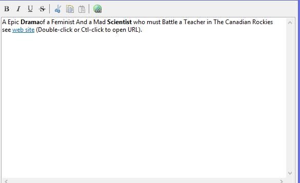
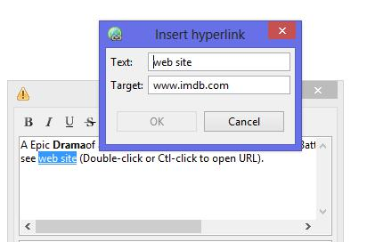

A small editor widget managing bold, underline, hyperlink around a StyledText widget.
This work is derived from work of Alonso Dominguez ( see on
javacodeggeks.com).
Adichatz work is free software distributed under the CeCILL version 2 license.
Add Bold, Italic, underline, strikethrough feature to character.
Cut, Copy, Paste.
Add Hyperlink (browser or mail access).
Buttons can be added after
RichText is instantiated:
new ToolItem(richText.getToolBar(), SWT.SEPARATOR);
refreshItem = new ToolItem(richText.getToolBar(),
SWT.CHECK);
refreshItem.setImage(refreshImage);
refreshItem.setToolTipText("Refresh");
refreshItem.addSelectionListener(new
SelectionAdapter() {
@Override
public void
widgetSelected(SelectionEvent e)
{
setValue(initialValue);
refreshItem.setEnabled(false);
richText.getToolBar().update();
}
});
richText.getToolBar().update();
General aspect :

Add hyperlink
